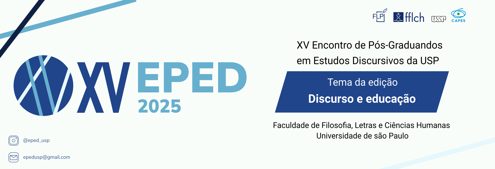

Próximos eventos
-

21 e 22/08/2025XV EPED-USP – Discurso e EducaçãoO Encontro de Pós-Graduandos em Estudos Discursivos da USP (EPED-USP) é um evento acadêmico organizado por pós-graduandos/as do Programa de Pós-Graduação em Filologia e Língua Portuguesa da Universidade de São Paulo (FLP-USP). Seu objetivo é promover o diálogo entre distintas abordagens teóricas e metodológicas de estudos do texto e do discurso, integrando alunos/as de diversos programas de pós-graduação da USP e de outras instituições.
Com edições desde 2009, o evento incentiva o debate de diferentes olhares epistemológicos e variados objetos de análise que caracterizam o estudo da produção contextualizada de sentido. O EPED acolhe docentes e alunos/as da USP, além de pesquisadores/as convidados/as do Brasil e do exterior para mesas e conferências. O sucesso do EPED tem inspirado outros eventos organizados por pós-graduandos/as na área de Linguística e Literatura.
Em 2025, o EPED chega à sua décima quinta edição com o tema "Discurso e Educação". O objetivo é promover, por meio de mesas-redondas e conferências, reflexões sobre o potencial dos estudos discursivos, em diálogo com áreas afins, para compreender como a educação e o ensino são representados e valorados socialmente.
A discussão sobre educação é permeada por discursos de diferentes setores: comunidade escolar, instituições de pesquisa, políticas públicas e sociedade em geral. Esses discursos revelam tensões de poder, disputas por legitimidade, múltiplos interesses e a pluralidade de vozes, criando um ambiente potencialmente mais democrático e inclusivo. Os debates reforçam a relevância da educação e a necessidade constante de diálogo.
Os estudos do discurso, com sua pluralidade teórica e metodológica, podem contribuir para o aprofundamento das discussões em uma área fundamental para a democratização do saber e a redução das desigualdades. O XV EPED busca fomentar debates sobre as tensões e potencialidades dos discursos plurais que permeiam a educação, guiado pela pergunta: Como os discursos plurais, com suas múltiplas vozes e perspectivas, podem contribuir para uma educação mais democrática e inclusiva?
O XV EPED será realizado nos dias 21 e 22 de agosto de 2025 e convida pesquisadores/as da USP e de outras instituições a debater pesquisas sobre questões discursivas, textuais, semântico-pragmáticas, interacionais e de ensino de língua portuguesa e estrangeira.
O tema norteador se aplica apenas às conferências e mesas-redondas. As propostas submetidas podem abordar qualquer temática relacionada aos estudos textuais, discursivos, semântico-pragmáticos, interacionais e ao ensino de língua portuguesa e estrangeira.
Eventos anteriores